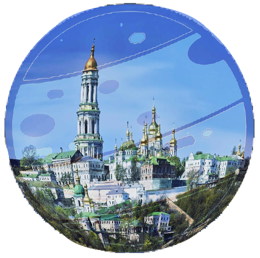
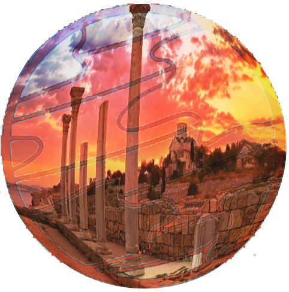

Космічне представлення 7 чудес України
Головна
Чудеса
Карта
Фотоколаж
Анімація
7 планет і 7 чудес України
Кожна планета має своє українське чудо:
1. Юпітер – Хотинська фортеця.
2. Сатурн – Кам’янець-Подільська фортеця.
3. Уран – Софія Київська.

4. Нептун – Києво-Печерська лавра.
5. Венера – Острів Хортиця.

6. Марс – Херсонес.
7. Меркурій – Софіївка.